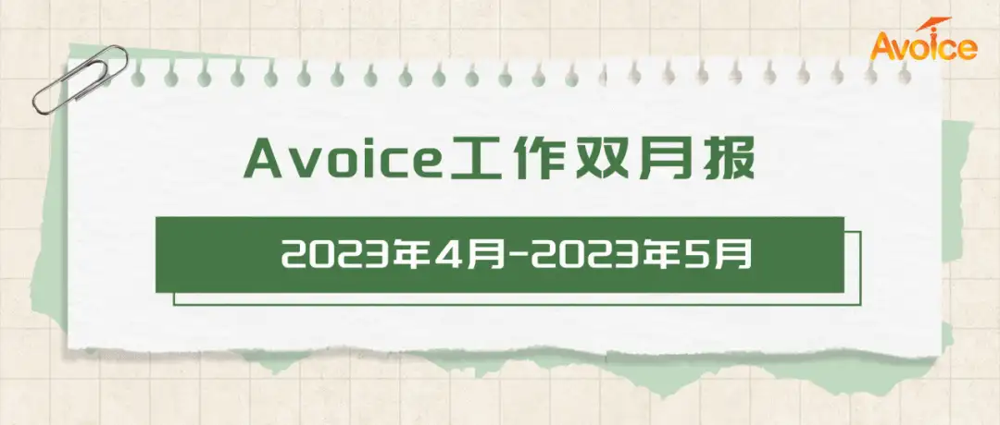

专栏引言：
《Avoice工作双月报》是记录Avoice海外华人女性保护项目在每两个月中开展的主要活动和关键进展的工作报告，在Avoice的日常管理中，是促进内部信息交流和跨部门沟通合作的媒介之一。
从2023年起，我们将正式、并持续对外发布《Avoice工作双月报》，期待通过这份双月报，向所有关心Avoice发展的伙伴分享Avoice的主要工作和阶段性成果，向大家展现一个透明、开放的Avoice，让大家更加了解Avoice如何通过各个部门、志愿者、专家顾问和合作伙伴的努力，将一件件细小的工作，凝聚成一个个长足的进步。
双月报速览
左右滑动，查看月报
双月大数据
月度救助工作汇总
4月至5月期间（不完全统计），Avoice共新增4位求助女性，正在为9位案主提供支持;
此外，有1位女性结案，4-5月累计收到5份个案反馈；其中，4/5的案主感到非常满意，4/5的案主认为工作人员回复非常及时。
月度筹款工作汇总
4月至5月期间，Avoice共收到2笔捐赠，合计133万元（其中包含来自北京字节跳动公益基金会捐赠的价值132万元飞书产品使用权限，和校友捐赠的1万元现金），感谢各位捐赠人对Avoice工作的支持！
双月大事记
完善国别反家暴普法手册，并与IT信息处合作将手册添加至Avoice网站的自助指南板块；
完成法律支持处与法律学术处的合并；
完成与海底捞和绿色物流科技集团的合作提案；
完成2023年度春招，共有326人申请，已入职96人；
★Avoice双月报 - 2023年第3期★
双月工作简述
一、项目质量部
学术研究处
2023年4月至5月期间，
学术研究处已收尾有关比利时地区亚裔女性暴力案件和女性职场生存现状的相关工作，并开始英国地区的数据搜集和整理；
此外，学术研究处产出了2份Avoice观察月刊——性别平等进展与海外亚裔发展全球要闻精选，月刊主题包含新闻评论、海外犯罪新闻、性别平等、亚裔话语权等。已发布4月月刊，详细内容可阅读：2023年4月月刊。
监测评估处
2023年4月至5月期间，
监测评估处初步搭建任务管理系统，推动组织工作效率的提高；
此外，监测评估处协助开展赋能支持处职能评估的相关工作，对负责人及志愿者展开访谈并制定下一步行动计划。
项目设计处
2023年4月至5月期间，
项目设计处统筹AWDPI论坛相关工作，督促各部门工作有序进行。
IT信息处
2023年4月至5月期间，
IT信息处持续推动AWDPI网站2.0开发和AWDPI网站1.0维护，跟进采写文章和学术研究报告的上传；
此外，IT信息处还支持人力资源部完成春招简历采集等工作。
二、救助支持部
个案对接处
2023年4月至5月期间，
个案对接处欧洲片区新进成员一名，已完成招聘和基础培训。
法律支持处
2023年4月至5月期间，
法律支持处新接收2起个案，正在为6位求助女性提供法律支持服务；
此外，法律支持处扩大个案和咨询的接收渠道，已将咨询接收渠道扩展至三个国家办公室。
心理支持处
2023年4月至5月期间，
心理支持处正在为2位求助女性提供心理支持服务，并开通Avoice内部人员心理支持服务；
此外，心理支持处完成春招目标并完善心理处志愿者服务手册，进一步推动心理支持服务专业化建设；
语言支持处
2023年4月至5月期间，
语言支持处正在为3位求助女性提供语言支持服务；
此外，语言支持处建立了中文编辑团队和英文编译团队；各语言组共计完成四篇文章和两支视频的编译，如《女性主义活动家阿克塞尔·贾·恩吉凯：“我相信从内向外解放的女性主义。”》。
赋能支持处
2023年4月至5月期间，
赋能支持处正在为1位求助女性提供赋能支持服务，并丰富社群运营内容，举办第四期分享会“打破隐形天花板，说出职场中的性别不平等”；
此外，赋能支持处试用流动分组制度并更新海外救助资源网络，完成6条赋能支持资料库的背调与录入。
三、合作拓展部
项目合作处
2023年4月至5月期间，
合作拓展处完成与海底捞和绿色物流科技集团的合作提案；
此外，合作拓展处为春招、年度论坛相关工作提供支持，并完成外部合作项目对接。
筹资管理处
2023年4月至5月期间，
筹资管理处继续跟进“青年领导力培养项目（海纳计划）”，并组建项目团队；
此外，筹资管理处根据PCA出具的比利时筹资战略规划方案，建立比利时筹资信息库，制定相应的行动计划并执行。
救助资源处
2023年4月至5月期间，
救助资源处完成春招和入职培训。
四、传播部
2023年4月至5月期间，
公众号和其他平台账号粉丝总数9430，其中公众号新增465、小红书新增24，LinkedIn新增22；在各个平台账号共发布了21条动态，动态累计浏览量10845，最高阅读量推送为5450人阅读的“Avoice 招募 | 在这个春天等一个“你”！”；
采写处4-5月发布三篇推文：①《Avoice感谢信丨致谢飞书公益计划在新的一年里对Avoice公益事业的支持》②《Avoice国际交流｜彼此连接，共同赋能——英国代表成员受邀参加华人女性联盟盛典》③《Avoice愈见·她说｜在异国走出困境的芋圆：“不想只揭示问题的存在，想找到解决问题的方法”》；
此外，采写处成功召开一次选题会，筛选出若干选题，为后续优质文章的生产提供基础。
五、人力资源部
2023年4月至5月期间，
人力资源部组织开展春季招募，本次招募共有326人申请，已入职96人 ，欢迎各位伙伴加入Avoice大家庭！
此外，人力资源部落实新的招募团队架构，并组织召开一次部门会议 ；组织开展1场新入职成员培训，覆盖32名成员。
六、比利时国家办公室
2023年4月至5月期间，
比利时国家办公室已将注册材料提交至司法局，并在列日组织一次线下活动。
内容来源｜Avoice Team
排版、封面制作｜杜婉婷